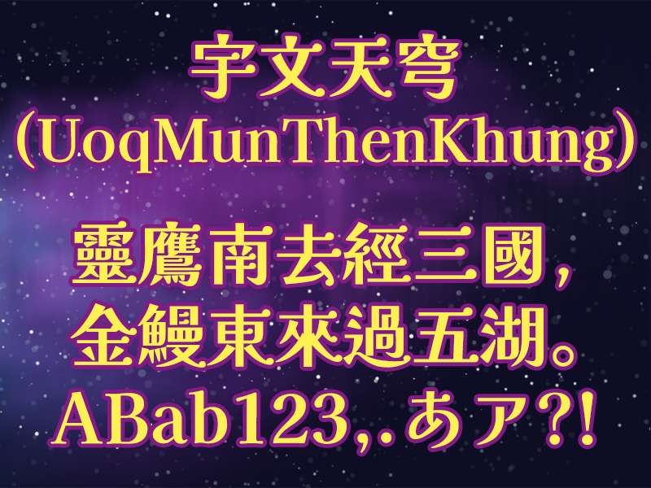

UoqMunThenKhung is a modified version of the FontKai Kaisei project, adapting the Kanji character set for Traditional Chinese typesetting. It is a calligraphic, high-contrast design with a clean and fresh feel that makes it optimal for formal settings, even with a friendly character.
To contribute to the project, please visit github.com/MoonlitOwen/ThenKhung.
